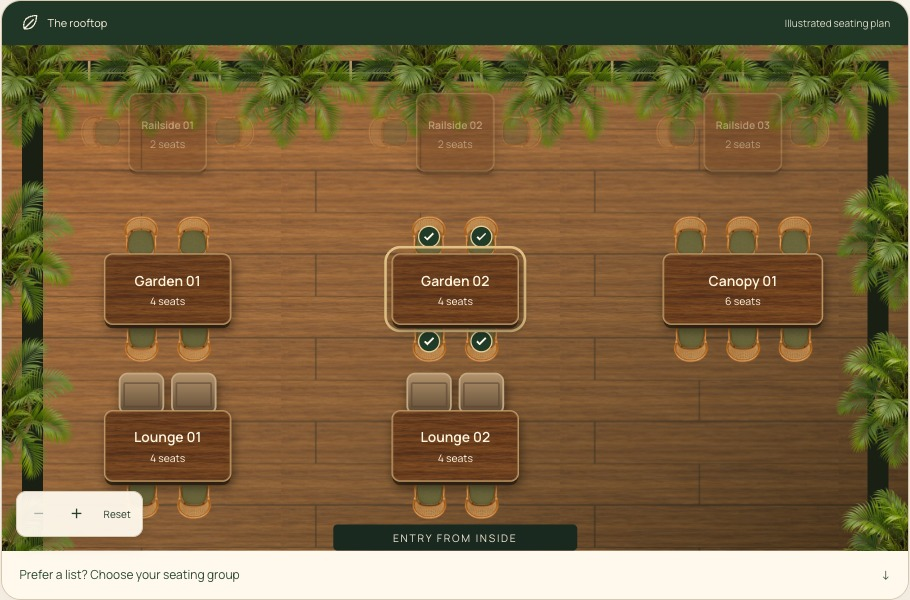
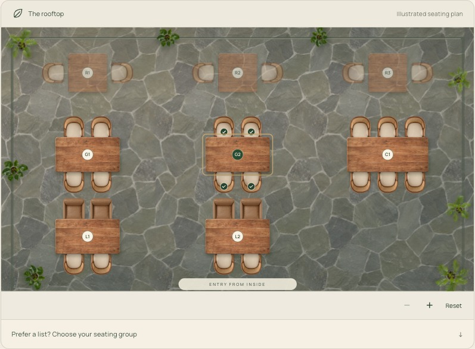
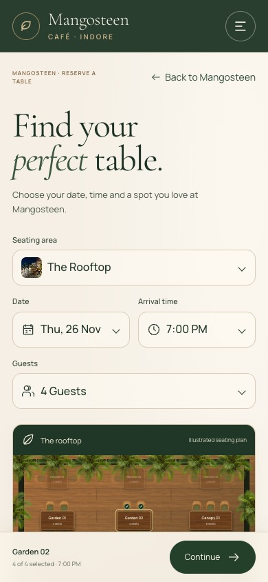
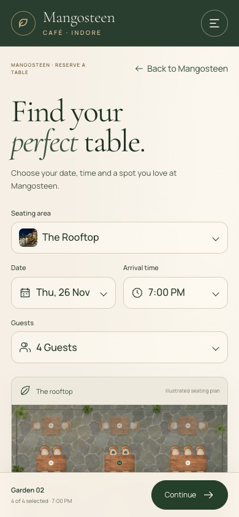
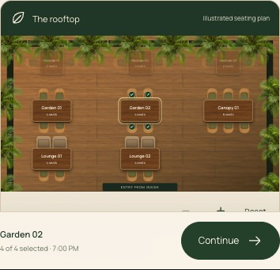
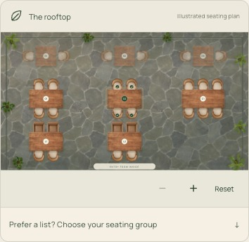

MANGOSTEEN · RESERVATION VISUAL REVIEW
Photographic materials.
The same seating and booking flow.
The seating map remains a schematic. Furniture and material cutouts are decorative; the café preview uses unchanged genuine photography. The existing coordinates, capacities, seat IDs, controls and submission logic are preserved.
Matched desktop viewports
Furniture, flooring, planting and labels

Before · wood floor, repeated leaf border, full names over tables
After · stone, independent photographic furniture, separate planters and small ID markersIndoor materials
Matched mobile viewport

Before · 390 × 844
After · 390 × 844Mobile map comparison
View the full mobile reservation. Map comparisons focus on the drawing.

Before
After · zoom remains available below the mapEntrance, selection and area switching
Normal-motion Chrome recording. Static before/after comparisons use reduced motion for repeatable composition.
Production build and nine backend tests · Menu, QR, order and CRM regression · Generated asset provenance and prompts